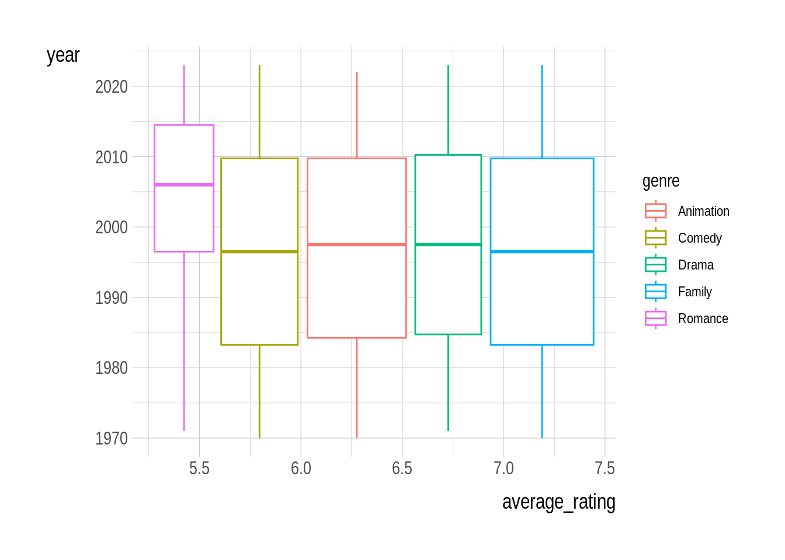

pathname <- "https://bcdanl.github.io/data/holiday_movies_w_genres.csv"
holiday_movies <- read_csv(pathname)Let’s analyze the health_ins data:
Part 1. Data Visualization Basics

Below is the data.frame holiday_movies containing information about holiday & Christmas movies (Source: the Internet Movie Database (IMDb)).
rmarkdown::paged_table(holiday_movies)Variable Description
tconst: alphanumeric unique identifier of the titletitle_type: the type/format of the titletitle: the more popular title / the title used by the filmmakers on promotional materials at the point of releasegenre: genre associated with the titleyear: the release year of a titleruntime_minutes: primary runtime of the title, in minutesaverage_rating: weighted average of all the individual user ratings on IMDbnum_votes: number of votes the title has received on IMDb
Question 1.
Provide both (1) ggplot code and (2) a comment to describe how the relationship between log10(num_votes) and average_rating varies by genre.
Answer:
ggplot(data = holiday_movies) +
geom_point(mapping = aes(x = log10(num_votes), y = average_rating),
alpha = .33) +
facet_grid(genre ~ .)#Q1 Response ##The relationship bewtween the number of votes and the ratings with genre; Most of the genres have many votes, besides the animation. You can see that most of the time the average rating is around 5-7.5
Question 2.
Provide both (1) ggplot code and (2) a comment to describe how the distribution of genre varies by title_type.
Answer:
ggplot(data = holiday_movies) +
geom_bar(mapping =
aes(y = genre,
color = title_type))#Q2 Response ##The relationship between the genre and title type is that tvMovies is the most popular.
Question 3.
Provide both (1) ggplot code and (2) a comment to describe how the distribution of average_rating, such as quartile values and outliers, varies by genre and title_type.
Answer:
ggplot(data = holiday_movies) +
geom_boxplot(mapping =
aes(x = average_rating,
y = genre,
color = title_type))#Q3 Response ## The relationship between the outliers and quartiles is that the outliers are furthest away from the second quartile. For movies the outliers when they are present they have the greatest distance from the second quartile.
Question 4.
Provide both (1) ggplot code and (2) a comment to describe how the distribution of log(num_votes) varies by genre.
Answer:
ggplot(data = holiday_movies) +
geom_col(mapping =
aes(x = log(num_votes),
y = genre,
color = genre)) #Question 4 Response ## You are able to gather that comedy have the most amount of votes while the animation genre has the least amount of votes.
Question 5.
Below is the data.frame, holiday_movies_genre_yearly, containing yearly mean value of average_rating for each genre.
holiday_movies_genre_yearly <- read_csv("https://bcdanl.github.io/data/holiday_movies_w_genres_yearly.csv")Provide both (1) ggplot code and (2) a comment to describe how the yearly trend of average_rating varies by genre.
Answer:
ggplot(data = holiday_movies_genre_yearly) +
geom_boxplot(mapping =
aes(x = average_rating,
y = year,
color = genre))
#Q5 Response ## The data shows that the average rating for romance seemed to get higher in the early 2000’s compared to the other genres, which had a higher average rating in the 90’s.